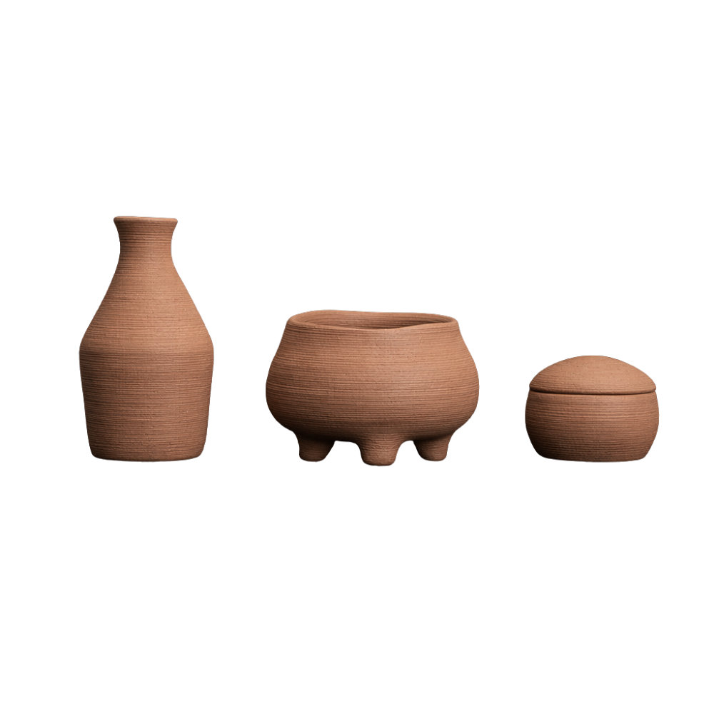

泥的本色。炉瓶三事，侘寂有机。香炉 · 著瓶 · 香粉盒。 The true color of clay. Burner, Zhuping, Box — wabi-sabi organic.

定窑白瓷是温润的。但泥土本身，有另一种语言。
Dingyao white porcelain is warm and smooth. But the clay itself speaks another language.
这一套素陶香道三件套，我们选择让 3D 打印的层叠纹理保留在器物表面——那些水平方向的细密纹路，不是瑕疵，是成形过程的诚实记录。每一道纹路，都是打印机一层一层堆叠时留下的「指纹」。
In this raw clay incense set, we chose to let the layered texture from 3D printing remain on the surface — those fine horizontal lines are not flaws, but honest records of the forming process. Each line is the "fingerprint" left by the printer, layer by layer.
不完全规则的轮廓、微微起伏的曲面、粗陶材质的颗粒感——这是侘寂（Wabi-Sabi）的美学：不追求完美，接受不完美本身就是一种美。上透明釉后，釉面渗入粗陶的纹理中，形成一种半哑光的质感。摸上去有轻微的粗糙感——那是泥土的温度，没有被完全打磨掉。
Imperfect contours, subtly undulating surfaces, the granular feel of rough clay — this is the aesthetics of Wabi-Sabi: not pursuing perfection, accepting that imperfection itself is a form of beauty. After applying transparent glaze, the glaze seeps into the rough clay texture, creating a semi-matte finish. Touching it, you feel a slight roughness — that is the warmth of the clay, not completely polished away.
3D 打印，让复杂变得轻盈。也让「诚实」变得可行——不必掩盖每一道成形的痕迹，因为它们本身就是美学的一部分。
3D printing makes complexity weightless. It also makes "honesty" feasible — there is no need to hide every trace of the forming process, because they are themselves part of the aesthetics.
一炉静燃，心归当下。
One burner, presence revealed.
拖拽旋转 · 滚轮缩放Drag to rotate · Scroll to zoom
三足支脚设计，器身微微悬空，稳定且透气。炉身呈自然扁圆形，两侧微微鼓起，像一颗被双手捧热的石子。口沿略微起伏，不完全水平——这是有机形态的诚实表达。水平纹理从底部一直延伸到口沿，火焰的光映上去，每道纹路都会投下细碎的阴影。
Three-foot design, the body slightly elevated — stable and breathable. The burner has a naturally flattened round shape, bulging slightly on both sides, like a pebble warmed by both hands. The rim undulates subtly, not perfectly horizontal — an honest expression of organic form. Horizontal textures extend from the base to the rim; when firelight hits it, each line casts a fine shadow.
三足支脚，稳定透气Three-foot base — stable and breathable
有机扁圆造型，口沿自然起伏Organic flattened round form — rim naturally undulates
水平层叠纹理，增强光影层次Horizontal layer texture — enhanced light and shadow
粗陶散热均匀，不聚热烫手Rough clay dissipates heat evenly — no hot spots
收的是工具，安的是心。
Tools put away, mind at peace.
拖拽旋转 · 滚轮缩放Drag to rotate · Scroll to zoom
瓶颈微微外撇，瓶身自然收束但不完全对称——更像一只从土里长出来的瓶子。水平纹理在瓶颈处随弧度变化疏密，视觉上有一种节奏感。瓶口经过精密计算，稳固承托标准长度香箸与香铲。内壁保持粗陶原貌，金属工具插入取出时不打滑、不晃荡。
The neck flares slightly outward, the body tapers naturally but not perfectly symmetrical — more like a bottle grown from the earth itself. Horizontal textures vary in density along the neck curve, creating a visual rhythm. The opening is precisely calculated to securely hold standard-length incense tongs and shovel. The interior remains raw clay — metal tools glide in and out without slipping or wobbling.
有机瓶身，瓶颈自然外撇Organic bottle form — neck naturally flares
水平纹理随曲面产生疏密节奏Horizontal texture varies with curve — visual rhythm
瓶口精密承托，工具取用顺手Precisely calculated opening — tools glide smoothly
粗陶内壁，金属件不打滑Raw clay interior — metal tools don't slip
盖住的不只是香粉，是一段安静的时光。
What's covered is not just powder — it's a quiet moment.
拖拽旋转 · 滚轮缩放Drag to rotate · Scroll to zoom
圆融的卵形盒身，配以同弧度的穹顶盖。水平层叠纹理环绕整个器身与盖面，像年轮，像水波。打开盖子，里面是未经精细抛光的内壁——粗陶的原始质感，香粉放进去，不会滑得太快，取用时有一种微妙的阻力，反而让人慢下来。
Gently ovular body with a dome lid of matching curvature. Horizontal layer textures wrap around the entire body and lid, like tree rings, like water ripples. Open the lid — the interior is unpolished raw clay. When incense powder is placed inside, it doesn't slide too fast; there's a subtle resistance when scooping, which actually makes you slow down.
卵形穹顶造型，水平层叠纹理全覆盖Ovular dome form — horizontal layer texture all around
粗陶内壁，香粉取用有自然阻力Raw clay interior — natural resistance when scooping
盖口微米级密合，密封性优秀Micron-level lid fit — excellent seal
半哑光釉面，触感温润带细微颗粒Semi-matte glaze — warm touch with subtle grit
⚠️ 素陶系列每一件纹理均不完全相同，属侘寂美学特征，非质量问题。尺寸与重量为参考值，请以实物为准。三件可单独购买，也可成套选购。 ⚠️ Each raw clay piece has unique textures — this is Wabi-Sabi aesthetics, not a quality issue. Dimensions are reference values. Available individually or as a set.
书房 · 茶席 · 冥想角 · 日式空间 · 极简室内 · 瑜伽室
Study · Tea table · Meditation corner · Japanese-style space · Minimalist interior · Yoga room